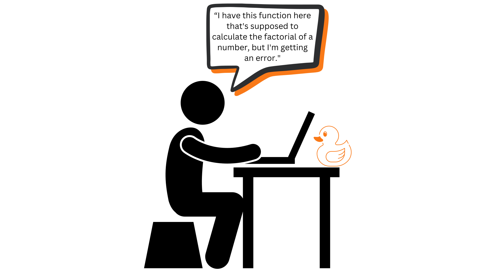

Pair Programming
Last updated on 2025-01-02 | Edit this page
Estimated time: 0 minutes
Overview
Questions
- What are the roles in pair programming?
- When is pair programming most helpful?
Objectives
- Learn about the benefites of pair programming
- Learn the roles of each member and some hints for successful pairing
Introduction to Pair Programming
Pair programming (a.k.a. pairing) is an increasingly popular technique used in software development. It addresses the “high cost, low payback” feeling of being a code reviewer by having two developers work together actively, to write a feature and its tests.
When pair programming, there are two roles: * The Driver - the one who actually controls the keyboard and the mouse, and writes the code while talking/describing their approach, asking questions about potential issues or confusing details. * This is described as “programming out loud” * The Navigator - observes what the driver is doing, asking/answering questions, evaluating the work, pointing out potential pitfalls, etc.
Periodically, at reasonable points, the Driver and Navigator switch roles.
It is true that pair programming takes more time to write a given programming. However, “two people doing the work of one person” is a completely wrong assessment. Several studies have shown only a ~15% increase to development time with pairing, after participants became comfortable with the approach. But, if pairing saves sufficient costs in other parts of the development lifecycle (e.g. debugging, maintenance) then it is worth it.
As with code reviews, there are several significant benefits of pair programming that far outweigh this increase in development time, which we will talk about next.
Pair Programming and Defects
Pair programming does an excellent job of improving code quality, with one study showing that pair-programming produced code with 15% fewer defects than solo-programming.
This is typically because: * Two people tend to do much better considering all possible execution scenarios than one person does. * A single implementer can become hyper-focused on a specific part of the implementation, losing detail on the “big picture” * Two people can validate an implementation against requirements more effectively. * Motivating all parts of the implementation against all requirements * Variances in understanding of a requirement will also be identified through discussing the requirement * “Rubber-duck debugging” is incorporated into the process
What is Rubber-duck debugging?
Originating from a story in the 1999 book, The Pragmatic Programmer, “rubber-ducking” is the act of describing code line-by-line to something, sentient or otherwise (a rubber duck in the original story), while debugging code. While it may sound ridiculous, this phenomena has been found to increase the detection of bugs or unintended behavior. While pair-programming, the driver will explain the code line by line while substituting the rubber-duck for the navigator, experiencing a similar effect. 
Assuming that pair programming is generally this effective, the time-savings in future debugging and maintenance costs more than compensates for the slight increase in development costs.
Remember, the longer a defect is undetected, the more costly it is to fix. Pair-programming tends to detect and resolve defects at the earliest possible moment, before code is even included in a commit to a repository.
Improved Satisfaction and Team Dynamics
Pair programming has been found to dramatically increase individual satisfaction. Collaborating with someone on a shared task is far more enjoyable for most people, and allows for the pair to celebrate success, mourn setbacks, and generally build camaraderie. One study consistently showed >90% of participants preferred pair programming over solo programming (Williams 2000).
Another added benefit of pair-programming is that team members learn to work with each other more effectively. By giving consistent practice in this area, pair programming forces people to work through personality differences and different working styles.
Pair programming also supports the distribution of knowledge and skills more broadly throughout the team. By pairing junior and senior developers together, opportunities for mentorship are created. Including teammates who are unfamiliar with a part of the code will teach them how it works, and broaden the shared knowledge throughout the team.
Improved Productivity
Teams that practice pair-programming frequently report increased productivity. Switching regularly between the Driver and Navigator roles keeps developers fresher and more engaged throughout the day.
For example, if one developer is distracted by some external interruption, the other person can get them back up to speed on the task more quickly.
Even if you don’t utilize pair programming daily, it can be a nice break from solo programming and even a little fun! Pair programming is especially useful in events like hackathons, where there may be more people than action items to do. Everyone will contribute to the project without stepping on toes and keeps the team fresh and motivated by swapping roles.
Issues with Pair Programming
Pair programming requires active focus, communication and participation from both programmers. Long periods of silence is a warning sign of something wrong.
Pair programming simply won’t work well if: * Either participant isn’t focused on the task at hand * Either participant isn’t making an effort to engage in ongoing communication about the task at hand
Other practices to avoid (in a larger team setting): * The same pairs of developers always working together, or developers never work on areas they are unfamiliar with * This inhibits knowledge-sharing benefits * The participants have unresolvable personality conflicts * This is rare, but it happens
Also remember, that pair-programming is not a fix-all solution. Not every part of a program warrants pairing. For example, two experts working on simple, well-understood tasks will likely work faster individually than if they are pairing. Pairing achieves the greatest benefits when: * The task is complex and/or difficult to implement correctly * The programmers are unfamiliar with the problem being solved
Senior developers should also pair with junior developers in order to
provide mentoring. It is important for the senior developer to be
patient and work at the junior developer’s pace and to solicit feedback
from the junior developer on their code.
Remember everybody makes mistakes!
Guidance for Drivers
- Spend time up-front discussing possible design approaches with Navigator, assuming you have not already discussed various design approaches with your team.
- Make sure you are “thinking out loud” while programming.
- Describe, at a reasonably coarse level of detail, how you are solving the problem you are trying to solve.
- After implementing anything significant (e.g. a function, a
relatively complex loop or chunk of code), ask for input!
- You can ask things like “Does this look right?” or “Am I missing anything?”
- After writing code, always spend time brainstorming how to test it
- Even if tests are not written while pairing, make notes about how to test
- Recall: Test code should be as important as product code, and should be designed and maintained just as carefully
- “Give up the steering wheel” at suitable points!
Tools for Remote (or local) Pair Programming
- VS Code
- Live Share extension from Microsoft
- PyCharm (and other JetBrains IDEs)
- Code With Me plug-in
- Generic
- Zoom (or equivalent) shared desktop. Use the annotate feature to highlight areas
- Have line numbers enabled to assist with dialog
Prepare for your journey
The names Driver and Navigator invoke the image of a road trip with two people. This visual can be helpful in remembering individual duties.
The Driver is in control of the car. They can make a decision to stop if they see a gas station or decide what kind of music to play, but they shouldn’t be looking at maps or changing radio stations! They need to stay focused on the car and traffic.
The Navigator, primarily, assists the Driver. They can make longer term plans, focus on details the Driver doesn’t have the bandwidth to consider, and can tell the Driver if they didn’t notice a speed limit change. As the Driver gets tired the two people swap jobs so they can keep moving
You may have experienced car trips where the roles were less defined and the Navigator was back seat driving. Yelling at the Driver that they need to slow down because there is a police car up ahead can make everyone stressed. As the Driver, you can’t just ignore the Navigator and go your own way. You need to work together to quickly, and safely arrive at your destination.
Key Points
- Pairs consist of a Driver, who does the typing, and Navigator, who directs the Driver and provides assistance when needed.
- Pair programming is most beneficial if the task is complex or programmers are unfamiliar with the code.